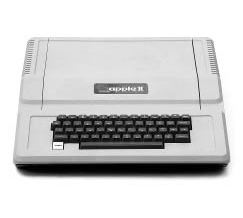

Apple II
Yeni Bir Çağın Başlangıcı

Entegre Bir Paket
Jobs Kişisel Bilgisayar Fuarı’nda gezinirken, Byte Shop’ın sahibi Paul Terrell’ın haklı olduğunu anladı: Kişisel bilgisayarların komple paket halinde sunulması gerekiyordu. Bir sonraki Apple’ın muhteşem bir kasaya ve gömme klavyeye sahip olması, aynı zamanda güç kaynağından yazılıma ve monitöre dek entegre olması gerektiğine karar verdi. “İlk tamamen entegre paketi yaratmak istiyordum,” diye anımsıyordu. “Hedef kitlemiz kendi bilgisayarlarını toplamayı seven, transformatör ve klavye satın almayı bilen bir avuç amatör değildi artık. Onların bir tanesine karşılık, makinenin kullanıma hazır olmasını isteyecek bin kişi vardı.”
Wozniak 1976’nın o hafta sonunda, İşçi Bayramı’nda, otel odalarında, Jobs’ın kendilerini bu yeni seviyeye çıkaracağını umduğu yeni makinenin –adı Apple II olacaktı– prototipinin üstünde çalıştı. Prototipi sadece bir kez dışarı çıkardılar, gecenin geç bir vaktinde, konferans salonlarından birindeki renkli projeksiyon televizyonuna bağlayıp test etmek için. Wozniak makinenin çiplerine renk ürettirmenin dahice bir yolunu keşfetmişti ve beyazperdeye benzer bir ekrana projektörle görüntü veren tipte televizyonlarda işe yarayıp yaramayacağını görmek istiyordu. “Projektörün renk devrelerinin renk yöntemimle uyumlu olmayabileceğini düşündüm,” diye anımsıyor. Klavyesinin tuşlarına basınca, salonun diğer tarafındaki ekranda renkli çizgiler ve girdaplar belirdi. O gece, bu ilk Apple II’yi onların dışında gören tek kişi otel teknisyeniydi. Bütün makinelere baktığını ve bunu alacağını söyledi.
Tam donanımlı Apple II’yi üretmek epey masraflı olacaktı, bu yüzden haklarını daha büyük bir şirkete satmayı düşündüler. Jobs Al Alcorn’a gitti ve bilgisayarı Atari’nin yöneticilerine tanıtma fırsatı istedi. Şirketin başkanı Joe Keenan’la görüşme ayarladı; Keenan Alcorn’la Bushnell’den çok daha muhafazakârdı. “Steve onu ikna etmek için odasına girdi, ama Joe ona katlanamadı,” diye anımsıyordu Alcorn. “Steve’in hijyensizliğinden hoşlanmadı.” Jobs yalınayaktı ve bir ara ayaklarını masaya koydu. “Bu zımbırtıyı almayacağız,” diye bağırdı Keenan, “ayrıca ayaklarını masamdan çek!” Alcorn “Evet. Bu kapı kapandı,” diye düşündüğünü anımsıyordu.
Eylül’de Commodore bilgisayar şirketinden Chuck Peddle bir demonstrasyon için Jobs’ın evine geldi. “Steve’in garajını gün ışığına açmıştık ve Peddle geldi; üstünde bir takım elbiseyle kovboy şapkası vardı,” diye hatırlıyor Wozniak. Peddle Apple II’ye bayıldı ve birkaç hafta sonra Commodore’un genel merkezinde üst düzey yöneticilere bir sunum yapılmasını ayarladı. “İsterseniz bizi birkaç yüz bin dolara satın alın,” dedi Jobs oraya vardıklarında. Wozniak bu “gülünç” teklif karşısında afalladığını anımsıyor, ama Jobs ısrarcıydı. Commodore yöneticileri birkaç gün sonra aradılar ve kendi makinelerini üretmenin daha ucuza geleceğine karar verdiklerini söylediler. Jobs sinirlenmedi. Commodore’u araştırmıştı ve kötü yönetildiğine karar vermişti. Wozniak kaçan paraya yanmadı, ama şirketin dokuz ay sonra Commodore PET’i çıkarması mühendis yönünü kızdırdı. “Midem bulandı,” dedi. “Aceleye getirip cidden berbat bir ürün çıkardılar. Oysa Apple onların olabilirdi.”
Commodore’la flörtleri, Jobs’la Wozniak’ın arasındaki potansiyel bir sürtüşmeyi yüzeye çıkarmıştı: Apple’a katkıları ve elde etmeleri gereken kazanç gerçekten eşit miydi? Mühendisleri girişimcilerden ve pazarlamacılardan üstün tutan Jerry Wozniak, paranın çoğunu oğlunun alması gerektiği kanısındaydı. Evine gelen Jobs’la bizzat konuştu. “Sen bir bok hak etmiyorsun,” dedi Jobs’a. “Hiçbir şey ürettiğin yok.” Jobs ağlamaya başladı, ki sıra dışı değildi bu. Duygularını kontrol etmekte asla başarılı olamamıştı ve olmayacaktı. Jobs, Steve Wozniak’a ortaklıklarını bitirmeye hazır olduğunu söyledi. “Yarı yarıya bölüşmeyeceksek,” dedi arkadaşına, “hepsi senin olsun.” Ama Wozniak aralarındaki simbiyozu babasından daha iyi anlıyordu. Jobs olmasa kendisi hâlâ Homebrew toplantılarında, arka tarafta devre kartı şematiklerini bedavaya dağıtıyor olacaktı belki de. Onun teknolojik dehasını kârlı bir işe dönüştüren Jobs’tı, Mavi Kutu meselesinde olduğu gibi. Ortaklıklarının sürmesi gerektiğinde hemfikirdi.
Akıllıca bir seçimdi bu. Apple II’nin başarılı olması için Wozniak’ın muhteşem devre tasarımı yeterli değildi. Tasarımın paket haline getirilip tamamen entegre bir tüketim malına dönüştürülmesi gerekiyordu ve bu Jobs’ın işiydi.
Jobs işe eski ortağı Ron Wayne’den bir kasa tasarlamasını istemekle başladı. “Beş parasız olduklarını düşündüğümden, kalıp sistemi gerektirmeyen ve standart bir demirci atölyesinde yapılabilecek bir şey tasarladım.” Tasarımında metal kayışlarla tutturulan bir pleksiglas kutu ve klavyenin üstüne örtülebilen bir kapak vardı.
Jobs bu tasarımı beğenmedi. Sade ve zarif bir tasarım istiyordu; böylece Apple’ın diğer ağır, gri, metal kasalı makinelerden farklı olacağını umuyordu. Macy’s’deki ev aletleri reyonunu gezerken Cuisinart mutfak robotları gözüne ilişince dökme plastikten yapılma hafif, şık bir kasa istediğine karar verdi. Bir Homebrew toplantısında, yerel bir danışman olan Jerry Manock’a böyle bir tasarım karşılığında 1.500 dolar önerdi. Jobs’ın görünüşünü pek güven verici bulmayan Manock parayı peşin istedi. Jobs bunu reddetti, ama Manock işi yine de kabul etti. Birkaç hafta sonra derli toplu, dostanelik yayan, sade, köpük kalıplı bir plastik kasa üretti. Jobs kasayı çok beğendi.
Sırada güç kaynağı vardı. Wozniak gibi dijital teknoloji meraklıları öyle analog ve bayağı şeylerle pek ilgilenmezlerdi, ama Jobs bunun kritik bir parça olduğuna karar verdi. Fan gerektirmeden güç sağlayacak bir şey istiyordu özellikle –tüm kariyeri boyunca istedi–. Bilgisayarların içindeki fanlar Zen’e uymazdı. Dikkat dağıtırlardı. Jobs Atari’ye uğrayıp, eski tarz elektrik mühendisliğinden anlayan Alcorn’a danıştı. “Al beni Rod Holt adlı bir dahiye yönlendirdi; adam bir sürü evlilik geçirmiş, her konuda uzman olan, zincirleme sigara içen bir Marksist’ti,” diye anımsıyordu Jobs. Manock ve diğerleri gibi Holt da Jobs’la tanışınca ondan pek etkilenmedi. “Ben pahalıyımdır,” dedi Holt. Adamın buna değer olduğunu düşünen Jobs paranın sorun olmadığını söyledi. “Kanıma girdi,” dedi, sonunda Apple’da tam gün çalışmaya başlayan Holt.
Holt sıradan bir lineer güç kaynağı yerine, osiloskop gibi cihazlarda kullanılan türden anahtarlamalı (switch mode) bir kaynak yaptı. Yani akımı saniyede altmış kez değil binlerce kez açıp kesiyordu, böylece elektriği çok daha az süre boyunca depoladığı için daha az ısı yayıyordu. “O anahtarlamalı güç kaynağı, Apple II’nin ana kartı (logic board) kadar çığır açıcıydı,” dedi Jobs sonradan. “Tarih kitaplarında maalesef Rod’un bu başarısından pek bahsedilmiyor, oysa bahsedilmeli. Artık bütün bilgisayarlarda anahtarlamalı güç kaynakları kullanılıyor ve hepsi Rod’un tasarımından kopya çektiler.” Wozniak dehasına karşın böyle bir şeyi kotaramazdı. “Anahtarlamalı güç kaynağı konusunda neredeyse hiçbir şey bilmiyordum,” diyor.
Jobs’ın babası ona kusursuzluk arayışında olan birinin görünmeyen parçaların bile işçiliğine özen göstermesi gerektiğini öğretmişti. Jobs bu ilkeyi Apple II’nin içindeki devre kartının tasarımına uyguladı. İlk tasarımı reddetti, çünkü hatları yeterince düz değildi.
Bu kusursuzluk tutkusu Jobs’ın kontrol etme içgüdüsünü dizginsiz bırakmasına yol açtı. Hackerlar ve amatörlerin çoğu bilgisayarlarını kişiselleştirmeyi, modifiye etmeyi ve onlara çeşitli cihazlar bağlamayı seviyorlardı. Jobs’a göreyse bu, rahat bir kullanıcı deneyimi için tehditti. Temelde hacker olan Wozniak buna katılmıyordu. Apple II’ye sekiz slot koymak istiyordu, kullanıcılar isterlerse daha küçük devre kartlarını ve çevre birimleri bağlayabilsinler diye. Jobs sadece iki slot olmasında diretiyordu; biri yazıcı, diğeriyse modem için olacaktı. “Normalde gayet yumuşak başlı biriyimdir, ama bu sefer ona ‘İstediğin buysa git kendine başka bir bilgisayar bul,’ dedim,” diye anımsıyordu Wozniak. “Benim gibi insanların herhangi bir bilgisayara bağlayacak bir şeyleri eninde sonunda bulacaklarını biliyordum.” Wozniak bu sefer tartışmayı kazandı, ama gücünün azaldığını hissedebiliyordu. “O zamanlar öyle davranabilecek durumdaydım. Hep öyle gitmeyecekti.”
Mike Markkula
Bütün bunlar için para gerekiyordu. “Bu plastik kasanın maliyeti 100.000 dolar civarında olacaktı,” dedi Jobs. “Toplam üretim maliyeti bile tek başına 200.000 doları bulacaktı.” Yine Nolan Bushnell’e gitti, bu sefer onu biraz para koyup azınlık hisseleri almaya ikna etmek için. “Bana 50.000 dolar karşılığında şirketin üçte birini vereceğini söyledi,” diyor Bushnell. “Çok akıllıydım ya, o yüzden hayır dedim. Şimdi düşününce eğlenceli geliyor, ağlamadığım zamanlarda.”
Bushnell Jobs’a önemli bir risk sermayesi şirketi olan Sequoia Capital’in kurucusunu, eskiden National Semiconductor şirketinde pazarlama müdürlüğü yapmış dobra bir adam olan Don Valentine’ı denemesini söyledi. Valentine Jobs’ın garajına Mercedes’le geldi; üstünde mavi takım elbise, gömlek ve çizgili ipek kravat vardı. Bushnell Valentine’in görüşmeden hemen sonra arayıp şaka yollu konuşarak “Beni niye o insanlıktan çıkmışların arasına gönderdin?” diye sorduğunu hatırlıyor. Valentine öyle dediğini pek hatırlamadığını söylese de, Jobs’ın tuhaf göründüğünü ve koktuğunu düşündüğünü itiraf ediyor. “Steve karşıkültür abidesi olmaya çalışıyordu,” diye anımsıyordu Valentine. “Pis sakallıydı, bir deri bir kemikti ve Ho Çi Minh’e benziyordu.”
Ama Valentine’in önde gelen bir Silikon Vadisi yatırımcısı olmasının sebebi, insanları dış görünüşleriyle yargılaması değildi. Onun asıl canını sıkan şey, Jobs’ın pazarlamacılıktan hiç anlamıyor olması ve ürünleri elektronik dükkânlarına elden dağıtmaktan memnun gibi görünmesiydi. “Sizi finanse etmemi istiyorsanız,” dedi Valentine ona, “pazarlamayla dağıtımdan anlayan ve bir iş planı hazırlayabilecek en az bir ortağınızın olması gerek.” Jobs başka insanların tavsiyelerine ya sinirlenerek ya da heveslenerek karşılık verirdi. Valentine’in karşısında ikinci tepkiyi gösterdi. “Bana üç isim öner,” diye karşılık verdi. Valentine bunu yaptı, Jobs adamlarla tanıştı ve birini seçti – Mike Markkula adlı bir adamı (Markkula sonraki yirmi yılda Apple’da kritik bir rol üstlenecekti).
Markkula henüz 33 yaşındaydı, ama Fairchild’da ve ardından Intel’de çalıştıktan sonra emekli olmuştu bile; o çip üreticisi halka açılınca hisse senedi opsiyonlarından milyonlar kazanmıştı. İhtiyatlı ve kurnaz bir adamdı, lisede jimnastikle uğraşmış biri olarak kararlı davranabiliyordu ve fiyatlandırma stratejileri, dağıtım ağları, pazarlama ve finans konularında uzmandı. Biraz içe kapanık olmasına karşın, yeni kazandığı servetinin tadını çıkarırken gayet gösterişli birine dönüşüyordu. Tahoe Gölü’nde kendine bir ev yaptırdı, ardından da Woodside tepelerinde dev bir malikâne yaptırdı. Jobs’ın garajına ilk gelişinde Valentine gibi siyah bir Mercedes değil ışıl ışıl, altın sarısı, üstü açılır bir Corvette kullanıyordu. “Garaja vardığımda Woz çalışma tezgâhındaydı ve hemen Apple II’yi gösterdi,” diye anımsıyordu Markkula. “İki adamın da saç tıraşına ihtiyaçları olduğunu görmezden gelerek, o çalışma tezgâhının üstünde duran şeyden büyülendim. Sonuçta saç tıraşı zor bir şey değildir.”
Jobs, Markkula’dan hemen hoşlandı. “Kısa boyluydu ve Intel’in pazarlama bölümünün başına onu getirmemişlerdi, bu yüzden kendini kanıtlamak istiyordu sanırım.” Ayrıca onu düzgün, dürüst bir insan olarak gördü. “Eline kazık atma fırsatı geçse bile bunu yapmayacağı belliydi, yapmazdı. Gerçekten ahlâklı bir insandı.” Wozniak da aynı ölçüde etkilenmişti. “Onun hayatımda gördüğüm en hoş insan olduğunu düşündüm,” diyor. “Daha da iyisi, ürünümüzü beğendi!”
Markkula Jobs’a birlikte bir iş planı hazırlamalarını önerdi. “Plan iyi giderse yatırım yaparım,” dedi Markkula, “gitmezse de beni birkaç hafta bedava çalıştırmış olursunuz.” Jobs akşamları Markkula’nın evine gitmeye, projeler üretmeye ve sabahlara kadar sohbet etmeye başladı. “Kaç evde kişisel bilgisayar bulunacağı gibi konularda bir sürü tahmin yürütüyorduk ve bazen sabahın dördüne kadar oturuyorduk,” diye anımsıyordu Jobs. Sonunda planın çoğunu Markkula yazdı. “Steve bir dahaki sefere sana şu bölümü getiririm diyordu ama genellikle getirmiyordu, bu yüzden sonunda ben yazıyordum.”
Markkula’nın planı hobici pazarının ötesine geçmeye yönelikti. “Bilgisayarı sıradan insanların sıradan evlerine sokmaktan, bilgisayarda favori yemek tariflerini saklamak ve bütçe tutmak gibi şeyler yapmaktan bahsediyordu,” diye anımsıyor Wozniak. Markkula çılgınca bir tahminde bulundu: “İki sene içinde bir Fortune 500 şirketi olacağız,” dedi. “Bir endüstri başlatıyoruz. On yılda bir olur bu.” Apple’ın Fortune 500 listesine girmesi yedi sene alacaktı, ama Markkula’nın tahmini temelde doğru çıktı.
Markkula şirketin üçte bir hissesi karşılığında 250.000 dolara kadar para yatırmayı teklif etti. Apple anonimleşecekti ve Markkula’nın, Jobs’ın ve Wozniak’ın her biri şirketin %26’lık hissesine sahip olacaktı. Hisselerin geri kalanıysa müstakbel yatırımcıları çekmeye ayrılacaktı. Üçü Markkula’nın yüzme havuzunun yanındaki soyunma odasında el sıkıştılar. “Mike’ın o 250.000 doları bir daha göreceğini sanmıyordum ve bu riske girmesinden etkilenmiştim,” diye anımsıyordu Jobs.
Şimdi Wozniak’ı şirkette tam gün çalışmaya ikna etmek gerekiyordu. “Bir yandan burada çalışıp, bir yandan da HP’deki güvenli işime devam etsem olmaz mı?” diye sordu. Markkula bunun verimli olmayacağını söyledi ve ona karar vermesi için birkaç gün tanıdı. “İnsanları ve yaptıklarını kontrol etmemin bekleneceği bir şirkette çalışmaya başlamak cazip gelmiyordu, kendime hiç güvenmiyordum,” diye anımsıyordu Wozniak. “Otoriter biri olmamaya çok önceden karar vermiştim.” Bu yüzden Markkula’nın soyunma odasına gidip ona HP’den ayrılmayacağını bildirdi.
Markkula omuz silkip tamam dedi. Ama Jobs çok sinirlendi. Wozniak’ı arayıp dil döktü. Arkadaşlarını onu ikna etmeleri için araya soktu. Bağırdı, çağırdı ve birkaç sinir krizi geçirdi. Hatta Wozniak’ın ailesinin evine gitti ve Jerry Wozniak’tan hüngür hüngür ağlayarak yardım istedi. Apple II’den iyi para kazanılabileceğini artık fark etmiş olan Jerry Wozniak, Jobs’ın tarafını tuttu. “İşyerindeyken beni arıyorlardı, babam, annem, kardeşim ve çeşitli arkadaşlar,” diyor Wozniak. “Hepsi de bana hata yaptığımı söylüyorlardı.” Bütün bunlar işe yaramadı. Sonra Allen Baum –Homestead Lisesi Buck Fry Kulübü’nden arkadaşlarıydı– aradı. “Cidden yapmalısın,” dedi. Apple’da tam gün çalışmanın yöneticilik yapması veya mühendislikten vazgeçmesi anlamına gelmeyeceğini söyledi. “Tam da bunu duymaya ihtiyacım vardı,” diyor Wozniak. “Organizasyon şemasının dibinde, mühendis olarak kalabilirdim.” Jobs’ı aradı ve artık hazır olduğunu söyledi.
Yeni şirket –Apple Computer Co.– 3 Ocak 1977’de resmen kuruldu ve dokuz ay önce Jobs’la Wozniak’ın kurduğu eski ortaklığı satın aldı. Bu pek az kişinin dikkatini çekti. O ay üyeleri arasında anket düzenleyen Homebrew, kişisel bilgisayar kullanan 181 kişiden sadece altısında Apple bulunduğunu keşfetti. Ancak Jobs, Apple II’nin bu durumu değiştireceğine emindi.
Markkula Jobs için baba figürü olacaktı. Jobs’ın üvey babası gibi o da Jobs’ın güçlü iradesine boyun eğecekti ve sonunda biyolojik babası gibi onu terk edecekti. “Markkula Steve’in babası gibiydi,” diyor risk sermayedarı Arthur Rock. Markkula Jobs’a pazarlama ve satış öğretmeye başladı. “Mike beni cidden himayesine aldı,” diyor Jobs. “Değerlerimiz epey ortaktı. Bir şirketi zengin olmak için kurmamak gerektiğini vurguluyordu. Hedef inandığın şeyi yapmak ve kalıcı bir şirket kurmak olmalıydı.”
Markkula ilkelerini “Apple Pazarlama Felsefesi” adlı tek sayfalık bir yazıya döktü; bu yazıda üç husus vurgulanıyordu. Birincisi empatiydi, müşterinin hisleriyle yakın bağlantı kurmaktı. “Onların ihtiyaçlarını diğer şirketlerden daha iyi anlayacağız.” İkincisi odaklanmaktı. “Yapmak istediklerimizi iyi yapmak için bütün önemsiz fırsatları elemeliyiz.”
Üçüncü ve en az diğerleri kadar önemli ilkeyeyse tuhaf bir isim, yükleme ismi verilmişti. “En iyi ürüne, birinci sınıf kaliteye, en faydalı yazılıma vs. sahip olabiliriz; ama bunları üstünkörü sunarsak değersiz görünürler; onları yaratıcı, profesyonel bir şekilde sunarsak, istenen nitelikleri onlara yüklemiş oluruz.”
Jobs kariyerinin geri kalanı boyunca pazarlamayla, imajla ve hatta ambalajlamanın ayrıntılarıyla bazen saplantılı bir şekilde ilgilenecekti. “Bir iPhone ya da iPad kutusunu açtığında, o dokunsal deneyimin ürün algını etkilemesini istiyoruz,” dedi. “Bana bunu Mike öğretti.”
Regis McKenna
Bu süreçte ilk adım vadinin önde gelen reklamcısı Regis McKenna’nın Apple için çalışmasını sağlamaktı. McKenna Pittsburghlü geniş bir işçi sınıfı ailesinden gelmeydi ve soğukkanlılığını, sertliğini güleryüzlülüğüyle gizliyordu. Üniversiteden terkti, Fairchild’da ve National Semiconductor’da çalıştıktan sonra kendi halkla ilişkiler ve reklam şirketini kurmuştu. Uzmanlık alanları, tanıdığı gazetecilerin müşterileriyle röportaj yapmasını sağlamak ve mikroçip gibi ürünler için marka farkındalığını arttırıcı, akılda kalıcı reklam kampanyaları hazırlamaktı. Bu kampanyalardan biri, Intel için hazırladığı bir dizi renkli dergi reklamıydı; bunlarda alışıldık, sıkıcı performans çizelgeleri yerine yarış arabaları ve poker çipleri vardı. Bunlar Jobs’ın dikkatini çekti. Intel’i arayıp bu reklamların yaratıcısını sordu. “Regis McKenna,” yanıtını aldı. “Onlara Regis McKenna nedir diye sorduğumda,” diye anımsıyordu Jobs, “bir insan dediler.” Jobs McKenna’ya telefonla ulaşamadı. Onu muhasebe müdürü Frank Burge’e yönlendirdiler ve adam onu başından savmaya çalıştı. Jobs neredeyse her gün aradı.
Burge sonunda Jobs’ın garajına gelmeyi kabul ettiğinde “Tanrım, bu herif cidden bayıcı olmalı. Bu şaklabana kabalık etmeden ne kadar dayanabilirim acaba?” diye düşündüğünü anımsıyor. Sonra karşısında yıkanmamış, kılıksız Jobs’ı bulunca iki şeyi fark etti. “Birincisi inanılmayacak kadar zeki bir genç adamdı. İkincisi söylediklerinin ellide birini bile anlamıyordum.”
Dolayısıyla Jobs’la Wozniak, kartvizitinde muzipçe “Regis McKenna, bizzat kendisi” yazılı olan kişiyle görüşmeye davet edildiler. Bu sefer normalde çekingen olan Wozniak huysuzluk etti. McKenna, Wozniak’ın Apple hakkında yazdığı bir yazıya göz attı ve fazla teknik olduğunu, renklendirilmesi gerektiğini söyledi. “Halkla ilişkilerden kimse yazıma dokunmasın, istemiyorum,” diye tersledi Wozniak. McKenna onlara ofisini terk etmelerinin zamanının geldiğini söyledi. “Ama hemen ardından Steve beni aradı ve tekrar görüşmek istediğini söyledi,” diyor McKenna. “Bu sefer Woz’suz geldi ve iyi anlaştık.”
McKenna ekibine Apple II broşürleri hazırlamalarını söyledi. Her şeyden önce Ron Wayne’in fazla taramalı, Victoria tarzı, gravür stili logosunu değiştirmeleri gerekiyordu, çünkü McKenna’nın renkli ve muzip reklamcılık stiline uymuyordu. Dolayısıyla Rob Janoff adlı bir sanat direktörüne yeni bir tane hazırlaması söylendi. “Şirin olmasın,” diye buyurdu Jobs. Janoff basit bir elma resminin iki versiyonunu çizdi; biri bütündü, diğerininse bir parçası ısırılmıştı. İlki kiraza benzediğinden Jobs ısırılmış olanı seçti. Ayrıca altı renkte şeritlerle bezeli bir versiyonu seçti (bu psikedelik renkler çimen yeşiliyle gök mavisinin arasında sıkışmışlardı), oysa bu logoyu basmanın maliyeti çok daha yüksekti. McKenna broşürün tepesine genellikle Leonardo da Vinci’ye atfedilen ve ileride Jobs’ın tasarım felsefesinin temel ilkesi olacak bir özdeyiş koydu: “Sadelik sofistikeliğin doruğudur.”
İlk Dramatik Tanıtım
Apple II’nin tanıtımının 1977 Nisanı’nda San Francisco’da düzenlenecek ilk West Coast Bilgisayar Fuarı’yla aynı zamana denk getirilmesi planlandı. Fuar Homebrew’ün gediklilerinden Jim Warren tarafından organize edilmişti ve Jobs haberi alır almaz hemen Apple’a bir stand ayırttı. Apple II’nin ilk tanıtımının dramatik olması için fuar salonunun en önünde bir yer istiyordu ve 5.000 dolar peşinat vererek Wozniak’ı afallattı. “Steve bunun büyük fırsatımız olduğuna karar vermişti,” diyor Wozniak. “Muhteşem bir makinemiz ve muhteşem bir şirketimiz olduğunu dünyaya göstermeliydik.”
Markkula’nın, özellikle yeni bir ürün tanıtılırken insanlarda kalıcı etki uyandırarak ürüne kalite “yüklenmesi” gerektiği tavsiyesinin uygulanışıydı bu. Jobs’ın Apple standına gösterdiği özen bunun yansımasıydı. Diğer sergiciler basit masalar getirmiş ve afiş panolarına ilanlar asmışlardı. Apple’ınsa siyah kadifeyle örtülü bir tezgâhı ve Janoff’un yeni logosunu taşıyan, arkadan aydınlatmalı, büyük bir pleksiglas paneli vardı. Tamamlanmış tüm Apple II’leri (üç taneydiler) sergiliyorlardı, ama ellerinde çok daha fazlası varmış izlenimi uyandırmak için boş kutuları üst üste koymuşlardı.
Jobs gelen bilgisayar kutularının üstündeki küçük lekeleri görünce küplere binmişti ve fuardan önce bir avuç çalışanına kutuları zımparalatıp cilalatmıştı. “Yükleme” meselesi öyle ileriye gitmişti ki, Jobs’la Wozniak kendilerine çekidüzen vermişlerdi. Markkula onları bir San Francisco terzisine gönderip üç parçalı takım elbiseler yaptırtmıştı; bu giysiler üzerlerinde komik duruyordu, smokin giymiş ergenler gibiydiler. “Markkula nasıl giyinmemiz, görünmemiz ve davranmamız gerektiğini açıkladı,” diye anımsıyor Wozniak.
Bunca çabaya değdi. Bej kasalı Apple II sağlam ama dostane görünüyordu, diğer masalardaki sevimsiz metal kasalı makinelerin ve çıplak devre kartlarının tersine. Apple fuarda 300 sipariş aldı ve Jobs’ın tanıştığı, Mizuşima Satoşi adlı bir Japon tekstilci Apple’ın Japonya’daki ilk bayisi oldu.
Ancak ele avuca sığmaz Wozniak’ın bazı eşek şakaları yapmasını ne şık giysiler, ne de Markkula’nın emirleri önleyebildi. Wozniak’ın sergilediği programlardan biri, insanların soyadlarından uyruklarını tahmin etmeye çalışıyor ve ardından bu uyruklara uygun etnik şakalar yapıyordu. Ayrıca “Zaltair” adlı yeni bir bilgisayarı tanıtan bir sahte broşür hazırlayıp dağıttı; broşürde reklamlardan kopyalanmış, “beş tekerlekli bir araba düşünün...” tarzı abartılı ifadeler vardı. Jobs bu şakaya kısa süreliğine kandı, hatta karşılaştırmalı çizelgede Apple II’nin Zaltair’den üstün görünmesinden gurur duydu. O şakayı kimin yaptığınıysa ancak altı yıl sonra öğrendi, Woz ona broşürün çerçeveli bir kopyasını doğumgünü armağanı olarak verince.
Mike Scott
Apple artık gerçek bir şirketti; bir düzine çalışanı ve kredi hesabı vardı ve müşterilerle tedarikçilerin yol açtığı gündelik baskılar hissediliyordu. Hatta şirket nihayet Jobs’ın garajından taşınmış ve Cupertino’daki Stevens Creek Bulvarı’nda – Jobs’la Wozniak’ın liseyi okudukları yerin bir buçuk kilometre kadar ötesinde kiralanan bir ofise yerleşmişti.
Jobs giderek artan sorumluluklarının stresini hissediyordu. Duygusal tepkilere meyilli ve küstah bir insan olmuştu hep. Atari’de tavırları yüzünden gece vardiyasına sürgün edilmişti, ama Apple’da bu mümkün değildi. “Giderek tiranlaştı ve eleştirilerinin dozu arttı,” diyor Markkula. “İnsanlara ‘Bu tasarım bok gibi görünüyor,’ diyordu.” Jobs özellikle Wozniak’ın genç yazılımcılarına, Randy Wigginton’la Chris Espinosa’ya sert davranıyordu. “Steve gelip yaptığım işe çabucak göz atıyordu ve bana boktan olmuş diyordu, işin ne olduğunu ve onu neden yaptığımı hiç bilmediği halde,” dedi, o zamanlar liseyi yeni bitirmiş olan Wigginton.
Jobs’ın hijyen sorunu da vardı. Aksi yöndeki bütün kanıtlara rağmen, vegan diyetleri sayesinde deodorant kullanmasına ve düzenli yıkanmasına gerek kalmadığına inanıyordu hâlâ. “Onu resmen kapı dışarı edip git yıkan demek zorunda kalıyorduk,” diyor Markkula. “Toplantılarda kirli ayaklarına bakıyorduk ister istemez.” Jobs bazen stres atmak için ayaklarını klozete sokuyordu ve doğaldır ki bu huyu iş arkadaşlarına pek sevimli gelmiyordu.
Markkula tartışma çıksın istemediğinden, Jobs’ı dizginlemek için Mike Scott’ı başkan olarak devreye sokmaya karar verdi. Markkula’yla Scott 1967’de Fairchild’da aynı gün çalışmaya başlamışlardı, ofisleri yan yanaydı ve doğumgünleri aynıydı (her yıl birlikte kutluyorlardı). 1977 Şubatı’ndaki doğumgünlerinde (Scott 32 yaşına basmıştı) öğle yemeği yerlerken Markkula ona Apple’ın yeni başkanı olmasını teklif etti.
Scott kâğıt üstünde mükemmel bir seçim gibi görünüyordu. National Semiconductor’ın bir üretim hattını yönetiyordu ve mühendisliği çok iyi bilen bir idareci olması avantajdı. Ama bazı kişisel tuhaflıkları vardı. Aşırı kiloluydu, tikleri ve sağlık sorunları vardı ve öyle gergindi ki koridorlarda yumruklarını sıkarak yürüyordu. Ayrıca tartışmacı olabiliyordu. Jobs’ın karşısında bu iyi de olabilirdi, kötü de.
Wozniak Scott’ı işe alma fikrine hemen ısındı. Markkula gibi o da Jobs’ın yol açtığı sorunlarla uğraşmaktan nefret ediyordu. Jobs’ınsa bu konuda kararsızlığa düşmesi şaşırtıcı değildi. “Henüz 22 yaşındaydım ve gerçek bir şirketi yönetmeye hazır olmadığımı biliyordum,” dedi. “Ama Apple bebeğimdi ve onu bırakmak istemiyordum.” Dizginleri biraz olsun gevşetmek bile onun için acı vericiydi. Bu meseleyi Bob’s Big Boy hamburgercisindeki (Woz’un favori mekânıydı) ve Good Earth restoranındaki (Jobs’ın favori mekânıydı) uzun öğle yemeklerinde adamakıllı düşündü. Sonunda gönülsüzce de olsa kabul etti.
Mike Scott’ın –Mike Markkula’yla karışmasın diye ona “Scotty” diyorlardı– temelde tek bir görevi vardı: Jobs’ı idare etmek. Bunu genellikle Jobs’ın yeğlediği toplantı modunda, yani birlikte yürüyüşe çıktıklarında yapıyordu. “Onunla yaptığım ilk yürüyüşte, daha sık yıkanmasını söyledim,” diye anımsıyor Scott. “O da bunu bir şartla yapacağını, frutaryen diyet kitabını okumamı ve kilo vermekte kullanmayı düşünmemi söyledi.” Scott o diyeti asla benimsemedi, çok kilo da vermedi; Jobs ise hijyen alışkanlıklarında ufak tefek değişiklikler yapmakla yetindi. “Steve haftada bir kez yıkanmakta ısrarlıydı, frutaryen diyeti yaptığı sürece bunun yeterli olduğunu söylüyordu,” diyor Scott.
Jobs kontrol sahibi olmayı seviyordu ve otoriteden nefret ediyordu. Dolayısıyla başına yönetici olarak getirilen adamla sorun yaşaması kaçınılmazdı, özellikle de Scott’ın onun iradesine boyun eğmeyen pek az kişiden biri olduğunu görmesinden sonra. “Steve’le aramdaki mesele kimin daha inatçı olabileceğiydi ve ben bu konuda gayet iyiydim,” diyor Scott. “Steve sözünün dinlenmesini istiyordu ve tavrımdan hiç hoşlanmıyordu.” Jobs’ın sonradan söylediği gibi: “Hayatımda en çok bağırdığım insan Scotty’dir.”
Daha baştan personel yaka numaraları konusunda sorun çıktı. Scott Wozniak’a #1’i, Jobs’aysa #2’yi verdi. Jobs #1’i istedi elbette. “Bunu kabul etmedim, yoksa egosu tavan yapacaktı,” diyor Scott. Jobs sinir krizi geçirdi, hatta ağladı. Sonunda bir çözüm önerdi. #0’ı alacaktı. Scott bunu kabul etti, ama Bank of America ücret bordrosu için pozitif tam sayı istiyordu, dolayısıyla Jobs #2’de kaldı.
Kişisel huysuzluğun ötesine geçen, daha temel bir anlaşmazlık da vardı. Bir restoranda tesadüfen tanışmalarından sonra Jobs’ın işe aldığı Jay Elliot, Jobs’ın en belirgin özelliğini şöyle tanımlıyor: “Ürüne, ürünün kusursuzluğuna duyduğu tutku saplantı boyutunda.” Mike Scott ise pragmatizmi kusursuzluk tutkusuna yeğliyordu. Apple II’nin kasasının tasarımı birçok örnekten biriydi. Apple’ın plastik kasayı renklendirmekte kullandığı Pantone şirketinde 2.000’den fazla bej tonu vardı. “Steve hiçbirini beğenmedi,” diyor Scott hayretle. “Farklı bir ton yaratmak istedi ve onu durdurmak zorunda kaldım.” Kasanın tasarımında rötuş yapma vakti gelince Jobs köşelerin ne kadar yuvarlak olması gerektiği meselesine günlerce kafa yordu. “Ne kadar yuvarlak olacakları umurumda değildi,” diyor Scott, “ben bir an önce karar verilmesini istiyordum.” Mühendis masaları konusunda da tartıştılar. Scott standart gri masalar istiyordu; Jobs ise bembeyaz masalar sipariş etmekte ısrarlıydı. Sonunda Markkula’ya satın alma emrini Jobs’ın mı yoksa Scott’ın mı imzalamaya yetkili olduğunu sordular; Markkula Scott’ın tarafını tuttu. Jobs ayrıca Apple’ın müşterilere yaklaşımında da diğer şirketlerden farklı olmasında diretiyordu. Apple II’yle birlikte bir yıllık garanti verilmesini istiyordu. Scott bu talep karşısında afalladı; normalde 90 günlük garanti veriliyordu. Bu meseleyi tartışırlarken Jobs yine gözyaşlarına boğuldu. Sakinleşmek için otoparkta gezindiler ve Scott bu seferlik geri adım atmaya karar verdi.
Wozniak Jobs’ın tavırlarından iyice rahatsız olmaya başladı. “Steve insanlara fazla sert davranıyordu,” diyor. “Ben şirketimiz aile gibi olsun istiyordum, hep birlikte eğlenelim ve bütün kazancı paylaşalım istiyordum.” Jobs ise Wozniak’ın büyümemekte direttiği kanısındaydı. “Çok çocuksuydu,” dedi Jobs. “Muhteşem bir BASIC versiyonu yazdı, ama oturup da asıl ihtiyacımız olan kayan noktalı BASIC’i yazmadı bir türlü ve sonunda Microsoft’la anlaşmak zorunda kaldık. İşte odaklanamıyordu.”
Ama kişilik çatışmaları şimdilik idare edilebilir düzeydeydi ve bunun başlıca sebebi şirketin gayet başarılı olmasıydı. Çıkardığı dergilerle teknoloji dünyasında kanılara yön veren analist Ben Rose, Apple II’nin ateşli bir savunucusu oldu. Bağımsız bir yazılım şirketinin ürettiği, kişisel bilgisayarlara yönelik ilk tablolama ve kişisel finans programı olan VisiCalc bir süreliğine sadece Apple II’de bulunabiliyordu, dolayısıyla Apple II işletmelere ve ailelere cazip hale geldi. Şirket nüfuzlu, yeni yatırımcılar çekmeye başladı. Öncü risk sermayedarı Arthur Rock başta, Markkula Jobs’ı kendisine gönderdiğinde pek etkilenmemişti. “Hindistan’daki gurusunun yanından yeni gelmiş gibi görünüyordu,” diye anımsıyordu Rock, “ve öyle kokuyordu.” Ama Rock Apple II’yi araştırdıktan sonra yatırım yaptı ve yönetim kuruluna katıldı.
Sonraki on altı sene boyunca Apple II’nin çeşitli modelleri pazarlanacak ve yaklaşık altı milyon adet satılacaktı. Kişisel bilgisayar endüstrisinin gelişmesinde diğer tüm makinelerden daha etkili oldu. Wozniak yüzyılın tek başına yapılan en büyük icatlarından biri olan, takdire şayan devre kartı tasarımı ve ona yönelik işletim yazılımları sayesinde tarihe geçmeyi hak ediyor. Ama Wozniak’ın devre kartlarını güç kaynağından kasaya dek dostane bir pakete entegre eden kişi Jobs’tı. Ayrıca Wozniak’ın makinelerini üretip satan şirketi kurdu. Regis McKenna’nın sonradan dediği gibi: “Woz muhteşem bir makine tasarladı, ama Steve Jobs olmasa o makine bugün hobici dükkânlarında duruyor olurdu.” Yine de çoğu insana göre Apple II’nin yaratıcısı Wozniak’tı. Bu durum Jobs’ı bir sonraki büyük adımı atmaya, sahiplenebileceği bir başarı kazanmaya sevk edecekti.